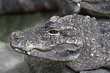

Soorten alligators en krokodillen
(Alligator sinensis)
Lengte: 2 meter
Aantal: minder dan 200
Status: Kritiek

(Crocodylus mindorensis)
Lengte: 2 - 2,5 meter
Aantal: minder dan 250
Status: Kritiek

(Mecistops cataphractus)
Lengte: 2,5 - 3 meter
Aantal: ongeveer 50.000 ?
Status: Kritiek
Bron: Wikipedia